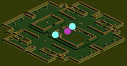
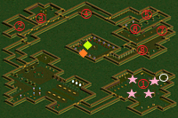

レッドアイの隠されたアジト
| 制限Lv | 320～345 |
|---|---|
| 秘密の入口 | スウェブタワーB5（63.57） |
| 報酬 | 経験値580万 60万G 盗掘王の秘宝 1個 試練のクリスタルの欠片 1個 |
| ミニマップの表示条件 | - |
| フィールド属性低下 | なし |
| 罠 | 床罠なし 扉罠なし |
<マップ>
秘密の入口 スウェブタワーB5
|  | ● ● |
… 移動ポータル … 秘密の入口 |
秘密ダンジョン レッドアイの隠されたアジト
|  | ○ ★ ◆ ◆ ① ② ③ ④ ⑤ ⑥ ⑦ ⑧ |
… 初期位置 … 柱 … 会長 ベアリーク … レッドアイ要員 … ベアリーク召使い … ガルバタル … セイグレン … 太っちょオブラム … 狂暴なバーツ … 凶悪なジャーケン … 凄腕カブ … 残虐なケガル |
<手順>
（第1区域）
ベアリーク召使い（Lv330）Zin4匹を狩る。
対応する★柱4箇所をクリック。だれでも可。
扉が開く。
（第2区域）
全てのMOBを狩る。
扉が開く。
（第3区域）
下の部屋のガルバタル護衛隊（Lv335）Zin10匹を狩る。
ガルバタル（Lv335）Zinが出現、狩る。物理攻撃無効。
上の部屋のセイグレン隊（Lv335）Zin9匹を狩る。
セイグレン（Lv335）Zinが出現、狩る。魔法攻撃無効。
扉が開く。
（第4区域）
太っちょオブラム（Lv340）Zinを狩る。
扉が開く。
狂暴なバーツ（Lv340）Zinを狩る。
扉が開く。
凶悪なジャーケン（Lv340）Zinを狩る。
扉が開く。
凄腕カブ（Lv340）Zinを狩る。
扉が開く。
残虐なケガル（Lv340）Zinを狩る。
扉が開く。
（第5区域）
リーダーが会長 ベアリークに話す。
NPCベアリーク護衛隊、ベアリーク参謀隊、会長 ベアリークがMOB化する。
ベアリーク護衛隊（Lv340）Zin2匹、ベアリーク参謀隊（Lv340）Zin2匹、会長 ベアリーク（Lv345）Zinを狩る。
会長 ベアリークのHPが1/2になるとHP1/2ダメ攻撃開始。
リーダーがレッドアイ要員に話す。
<補足>
物理攻撃無効と魔法攻撃無効のMOBがいるため、物理と知識火力の両方が必要。
物理攻撃無効のMOBは、（第3区域）ガルバタル。純魔法攻撃やインターバルシューターが命中します。
魔法攻撃無効のMOBは、（第1区域）警備隊 警備犬、（第2区域）レッドアイ戦士、（第3区域）セイグレン、
（第5区域）ベアリーク護衛隊。弱化装備・低下も無効。物理攻撃のみ可。
魔法抵抗が非常に高いMOBも多く、知識職は弱化装備が必要。
魔法抵抗の高いMOB
| 区域 | MOB | 魔法抵抗（％） | |||||
|---|---|---|---|---|---|---|---|
| 火 | 水 | 風 | 土 | 光 | 闇 | ||
| 第1区域 | ベアリーク召使い | 100 | 72 | 67 | 97 | 42 | 43 |
| ベアリーク騎士隊 | -9 | 47 | 72 | 47 | 97 | 37 | |
| 第4区域 | 凶悪なジャーケン | 38 | 35 | 111 | 70 | 45 | 25 |
| 凄腕カブ | 35 | 97 | 27 | 27 | 22 | 22 | |
| 第5区域 | ベアリーク参謀隊 | 113 | 93 | 113 | 113 | 62 | 113 |
| 会長ベアリーク | 89 | 30 | 64 | 44 | 40 | 39 | |
（第4区域）残虐なケガルは全属性魔法抵抗49％だが、弱化装備がないと純魔法攻撃は無効化される。
| MOB | 使用スキル | 詳細 |
|---|---|---|
| ベアリーク召使い （降神術師Zin） |
スタンアタック | 物理ダメ スタン |
| ウィップアタック | 物理ダメ スタン | |
| 悪態 | 攻撃・防御力・移動・攻撃速度低下 | |
| ワームバイト | 闇ダメ 移動不能 | |
| ガルバタル護衛隊 （スナッチャーZin） |
スティール | ゴールド奪取 |
| ダガーアタック | 物理ダメ | |
| バイパーダガー | 物理+毒ダメ | |
| ディテクティング | 索敵 | |
| ガルバタル （アサシンZin） |
影隠れ | ブラー 命中・回避率上昇 |
| ダガーアタック | 物理ダメ | |
| バイパーダガー | 物理+毒ダメ | |
| カウンタースティング | 物理ダメ | |
| セイグレン隊 研究員助手 （偽聖職者Zin） |
クラブアタック | 物理ダメ |
| ヒーリング | HP回復 | |
| ディテクティング | 索敵 | |
| バインディングモルプ | 物理+闇ダメ 移動・攻撃速度低下 | |
| セイグレン （レイスZin） |
ブラインドアタック | 物理ダメ 暗闇 |
| フォースドレイン | 物理ダメ Lv低下 | |
| ファイアボール | 多段火ダメ | |
| 悪口 | 全属性抵抗低下 | |
| 太っちょオブラム （オーガオフィサーZin） |
クラブアタック | 物理ダメ |
| フリーリジェネレーション | HP回復 | |
| スマッシュベロシティー | 物理ダメ 移動・攻撃速度上昇 | |
| バインディングモルプ | 物理+闇ダメ 移動・攻撃速度低下 | |
| 狂暴なバーツ （キクロップスZin） |
キックアタック | 物理ダメ |
| マウルリングアタック | 物理ダメ スタン 致命打 | |
| つかんで投げつける | 物理ダメ ノックバック | |
| 凶悪なジャーケン （エルフ騎士Zin） |
ソードアタック | 物理ダメ |
| スナイプ | 物理ダメ 致命打率100％ | |
| ソニックブロー | 風ダメ | |
| ハンドレッドソード | 物理ダメ | |
| 凄腕カブ （ナーガファイターZin） |
ブラッドエキスパンド | 攻撃力低下 防御力上昇 HP回復 |
| ストンゲイズ | 石化 | |
| シールドピアシング | 物理ダメ | |
| 残虐なケガル （脱獄犯2 Zin） |
ヒーリング | HP回復 |
| ライトニングサンダー | 風+光ダメ 移動速度低下 | |
| アイスボルト | 水ダメ コールド | |
| ライフドレイン | 物理ダメ HP吸収 | |
| ベアリーク護衛隊 （シーク天使2 Zin） |
ソードアタック | 物理ダメ |
| ヒーリング | HP回復 | |
| ディメンジョンアーマー | 異常・低下・呪い・全属性抵抗・防御力上昇 | |
| スパイダーウェブ | 移動不能 | |
| ホーリーサークル | 光ダメ | |
| ベアリーク参謀隊 （邪臣2 Zin） |
ディスチャージアタック | CP減少 |
| ワインディングサイズ | 物理ダメ スタン | |
| 悪口 | 全属性抵抗低下 | |
| 会長ベアリーク （剣闘士4 Zin） |
リアニメイトソーサリー | HP回復 |
| シールドピアシング | 物理ダメ | |
| デビルスピード | 移動・攻撃速度上昇 | |
| アシッドベノム | 毒ダメ 防御力低下 | |
| RED STONEの情熱 | 物理+火+水+風+毒ダメ 攻撃・防御力・HP上昇 | |
| 警備隊 警備犬 （ウルフZin） |
バイトハンギング | 物理ダメ 移動速度・回避率低下 噛み付き |
| インフェルノバイト | 物理+火ダメ | |
| レッドアイ戦士 （ゴールデンマスクZin） |
ピストアタック | 物理ダメ |
| ソードクラッシュ | 物理ダメ 決定打 | |
| ベアリーク騎士隊 （エルフガーディア Zin） |
ピンシャーアタック | 物理ダメ |
| スリーピーホール | 物理ダメ 睡眠 | |
| フリーリジェネレーション | HP回復 | |
| レッドアイ警備兵 （レッドアイ護衛兵Zin） |
ハルバードアタック | 物理ダメ |
| ハルバードストライク | 物理+風ダメ | |
| スマッシュベロシティー | 物理ダメ 移動・攻撃速度上昇 | |
| ソーンアーマー | ダメ反射 | |
| レッドアイ研究員 （レッドアイ魔法師Zin） |
ディテクティング | 索敵 |
| アイスボルト | 水ダメ コールド | |
| レッドアイピア | 攻撃・防御力・命中・回避率低下 | |
| 失敗した実験体 （プレーガーZin） |
ポイズナスクロー | 物理+毒ダメ |
| スリーピーホール | 物理ダメ 睡眠 | |
| 共鳴 | 攻撃力上昇 |